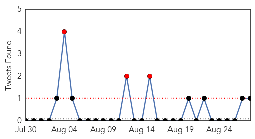
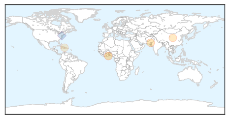
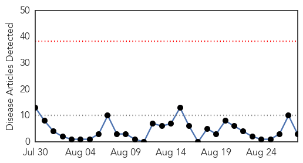

Cholera
30-Day Web Trend
1 alerts, 2 warnings
30-Day Twitter Trend
6 alerts, 0 warnings

Article Locations
Article Confidences
Top Articles:
Top Tweets:
- 0.808
- RT: Super! GHIF investing in cholera vaccines. 2 much cholera in the world, not enough vaccine 2 bridge while improving W…
Chikungunya
30-Day Web Trend
0 alerts, 0 warnings

30-Day Twitter Trend
0 alerts, 0 warnings

Article Locations
Article Confidences

Top Articles:
Top Tweets:
-
No tweets found for Aug 28, 2014